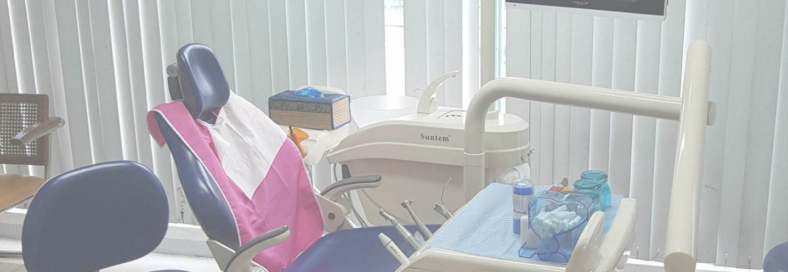

Sulit & Bagasan Dental Office

SULIT & BAGASAN

Sulit and Bagasan Dental Office
What is Sulit & Bagasan Dental Office? Sulit and Bagasan Dental Office,
established in 2017, operates as a comprehensive dental clinic, offering
a wide range of dental care services. The clinic is unwavering in its
commitment to enhancing oral health awareness and delivering superior
dental care to its patients by providing adequate oral health education
to its patients. The clinic’s services encompass various dental
procedures, including tooth extractions and root planing, all designed
to maintain and enhance oral health. Patient education is a cornerstone
of the clinic’s approach, providing patients with the necessary
knowledge to maintain the best oral health.